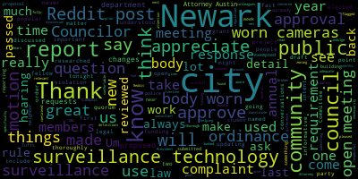
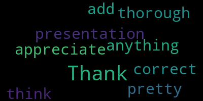

[Bears]: All right, welcome everybody. We have our wonderful Medford High School Orchestra here. They just won the gold medal from MICA, so congratulations and welcome and we're very excited. Mr. Cheng and the members of the orchestra and Councilor Tseng. We're going to hear some of their great performance and then we're going to have some citations and trophies given out. So congratulations and the floor is yours.
[SPEAKER_08]: Thank you. uh...
[SPEAKER_07]: quite great pleasure to work with those wonderful students. The award is the result of hard work and parents' support, also administrators, and the support from the entire Medford community. We are very proud for the children's achievement. Middle school students, they receive a silver medal
[Bears]: So we're going to start with certificates for our middle school ensemble and I'm going to turn the floor over to Councilor Tseng.
[Tseng]: Thank you all so much. Thank you to the high school orchestra for playing such a beautiful two pieces for us. Let's give everyone one more round of applause. It's truly the pride of Medford to be able to have something like this for us tonight. I think we ought to be celebrating our accomplishments as a city. When we come together and support the arts and support our students, so much good can happen. With that being said, would you want to join me, Ms. Chang? We have a lot of awards to give out, so I'd ask everyone to hold your applause until the end, but feel free to take photos and we will make sure everyone gets an award too. Our first award is to Nikki Chow. I'm worried we're going to run out of room. Benjamin Hayes. Colin Keith. Eliana Lam. Elia Perez. Elia's not here today, but we will save this for her. Cameron Blander. Maxwell Goodwin. Noor Hashemi. Congratulations. Saffron Jacobs. Daniel Luo. Jaden Zheng. Henry Kaye. Douglas Casey. Congratulations.
[SPEAKER_08]: Congratulations.
[Tseng]: John LeMayo.
[SPEAKER_08]: Congratulations.
[Tseng]: Leo Hernandez. Congratulations. Dinh Ho.
[SPEAKER_08]: Congratulations.
[Tseng]: Aya Yeager.
[SPEAKER_08]: You're good. You're good. Zihan Xu.
[SPEAKER_05]: Congratulations.
[Tseng]: Tanmaya Aman.
[SPEAKER_08]: Congratulations.
[Tseng]: Lillian Barabino.
[SPEAKER_05]: Congratulations.
[Tseng]: Congratulations. Annabelle Foster. Oh, not yet. Kira Huynh. Wesley Kwong. Sophia Levine. Margot Reinfeld. Caleb Strauss. And then two more, Elijah Adamek. And August Velazquez. Thank you to all, those are our middle schoolers. I don't think we missed anyone, so that is a great mark on us. Let's take a group photo. If maybe we can stand here.
[SPEAKER_08]: One second. I'm back, please back, call us back.
[SPEAKER_05]: Councilors, feel free to jump in.
[Bears]: You should go down there. If you want. Yeah, if you want. You're good there? Stay on the wings, whatever's easiest. Yeah.
[SPEAKER_08]: Make Josh's front a little bit. Make sure we get everyone in the picture. Yeah, right there.
[SPEAKER_05]: yeah for the next one yeah honestly you might as well yeah i know i'm like
[SPEAKER_08]: Okay.
[Tseng]: Thank you for your patience as we turn over to our next group of students. If everyone could just line up right there. You can come closer. Come on up. We don't bite. Okay, now we have our commendations for the gold medal-winning orchestra, the Medford High School String Orchestra. Okay, Sebastian Caracaburu.
[SPEAKER_05]: And then you can sit right down, stand right down there.
[SPEAKER_08]: Andre Doherty.
[Tseng]: Maggie Fowler.
[SPEAKER_08]: Samuel Keith.
[SPEAKER_05]: There's a lot going on.
[Tseng]: There's a lot going on, yeah.
[SPEAKER_08]: Okay, Mary Schmidt. Lincoln Bell.
[Tseng]: Here we go. Congratulations. Justin Cho.
[SPEAKER_08]: Congratulations.
[Tseng]: Isabella Maidavelli.
[SPEAKER_08]: Congratulations.
[Tseng]: Amy Nguyen. Kyle Tam.
[SPEAKER_08]: Jaden Ville. Maya Hughes.
[Tseng]: Anthony Purifori. Leanne Lapp. William Malone.
[SPEAKER_08]: Congratulations.
[Tseng]: Kiana Tran? Kiana, sorry, Kiana Tran. Adrian Wu? Owen Barzak-Roll. Karina Lewis. Christina Joselagi. Benjamin Sayers, not here.
[SPEAKER_08]: Jaden Wu.
[Tseng]: Ari Atwal, also not here. And last but not least, Calvin Lee. That's our high school orchestra. Let's take a group photo. Same drill as before.
[SPEAKER_08]: All right. All right, one, two, and. Good job.
[Bears]: We have one more set of citations to give out, so bear with us. All right, last citation before we start the much less fun city council meeting. I just want to read it really quickly we passed this on April 30. Be it resolved by the Medford City Council that we congratulate the Center for Citizenship and Social Responsibility students at the Brooks Elementary School for their fundraiser to purchase safety devices for our local United States Postal Service mail carriers. Be it further resolved that we invite these students to the May 14 City Council meeting to receive a citation for their fantastic work. We also had from Councilor Scarpelli be it resolved the City Council recognize the amazing work of Savannah McLaughlin and Adam Costello, members of the CCSR, and 5th grade students from the Brooks Elementary School on providing safety whistles for postal workers. We unanimously approve those resolutions and we are excited to offer these citations tonight. And I will turn it over to Councilor Scarpelli if he would like to say any words.
[Scarpelli]: Thank you. Tonight is a great example of what Method truly is about, right? We have, tonight was just, we haven't had many of these in a long time, but this was a love fest. And I, you know, this is what Method's all about. So a group that was started a few years back, the CCSR, we have one of our leaders here, Mr. Richard Trotter is here tonight. And I know that when we heard about this story, and then we saw it on TV, and then you see it in action, because, you know, it sounds, well, that's cute, right? And then all of a sudden, our postal worker walked down the street with the whistle. And I said, and you see what's going on. And there are some dangers. Sadly, there are dangers. And we had two fifth graders that decided that they wanted to do something about it. And it's easy just to sit back and do nothing. But this is what's exciting when you have a fifth grade. to fifth graders that can reach out to this school, that can reach out to an organization like CCSR, and then provide an avenue that they can do something really, really, really moving, and something that really shows the city and shows their friends and shows everybody that you take an initiative, because you care, because you see something and you want to fix something. So I give them our friends a lot of credit for what they've done. I'm so happy they're here tonight with their families. So thank you.
[Bears]: Thank you, Councilor Scarpelli. If we could invite up Mr. Trotta and Savannah and Adam. First, we'll start with Savannah. The Medford City Council takes pleasure in awarding this council accommodation to congratulate Savannah McLaughlin, member of the CCSR and fifth grade student from the Brooks Elementary School, for their fundraiser to purchase safety devices for our local USPS mail carriers. The realization of this outstanding achievement will undoubtedly lead to successes and accomplishments throughout your life.
[Scarpelli]: Come on up, Savannah.
[SPEAKER_08]: That's for you. You want to say something? Awesome.
[Bears]: Now we have that the Medford City Council takes pleasure in awarding this council commendation to congratulate Adam Costello, member of the CCSR and fifth grade student from the Brooks Elementary School for their fundraiser to purchase safety devices for our local USPS mail carriers. The realization of this outstanding achievement will undoubtedly lead to successes and accomplishments throughout your lives. Thank you. You want to say something?
[SPEAKER_05]: Congratulations.
[Bears]: Great job. All right. Great job. One more and then we can take a photo up here. I just want to also say we have a general citation for the Brooke CCSR. So I don't know if Mr. Trotta, you want to accept it on behalf of CCSR, but congratulations.
[SPEAKER_05]: And if family wants to come up for the photo too, families are more than welcome for the photo.
[SPEAKER_08]: Good job. Thank you. Mr. Cohn, we'll call her up in a minute. Everybody left. Hey.
[Bears]: 10th regular meeting. Medford City Council May 14th 2024. Mr. Clerk, please call the roll.
[Adam Hurtubise]: President Vice President Collins, Councilor Lazzaro, present Councilor Leming, Councilor Scarpelli, Councilor Tseng, President of President of bears.
[Bears]: Everybody please rise. Salute the flag. I pledge allegiance
[SPEAKER_05]: I would hold the judge.
[Bears]: Thank you to everybody for bearing with us. We just had a fantastic performance by our Medford High School String Orchestra, and we issued citations for the wonderful gold medal of our MHS Orchestra, silver medal by the Medford Middle Schools Orchestra, and amazing work by our Center for Citizenship and Social Responsibility. So a good first little bit of a meeting, if you ask me. Announcements, accolades, remembrances, reports and records, records, the records of the meeting of April 30th, 2024 are passed to Vice President Collins. Vice President Collins, how did you find the records?
[Collins]: I found them in order and I move for approval.
[Bears]: On the motion of Vice President Collins to approve the records, seconded by Councilor Callahan. All those in favor? Aye. Opposed? Motion passes. Reports of committees 24-045 committee of the whole budget April 30th 2024. This is one of our preliminary budget meetings on the 2024 budget on them. Is there a motion to approve. So, the motion of Councilor Tseng to approve seconded by Councilor Leming. All those in favor. I oppose motion passes. 24-045 committee the whole budget may 1 2024. This was another preliminary budget meeting on the fiscal 25 city budget, is there a motion to approve motion by Councilor Callahan seconded by Councilor Tseng all those in favor. I opposed motion passes, 24-099 committee of the whole. May 7, 2024. This was a meeting that we held for the annual action plan for program year 50 for the Federal Housing and Urban Development Community Development Block Grant Program. Is there a motion to approve? On the motion of Councilor Tseng to approve, seconded by? Seconded by Councilor Leming. All those in favor? Opposed? Motion passes. 24-015, 24-069, and 24-073, Resident Services and Public Engagement Committee, May 7th, 2024. I will go to the committee chair, Councilor Leming.
[Leming]: Thank you, Council President. So we discussed three items at the Resident Services and Public Engagement Committee. The first, we approved the social media policy, which was drafted by Councilor Tseng and Councilor Lazzaro, passed, reported favorably as a paper to the regular committee meeting. We also established the first public listening session, which will occur at the Medford Senior Center, 10 a.m. on May 31st, and we also scheduled the first subcommittee meeting to sort of hash out the rules and procedures for these listening sessions, the first the first meeting of that subcommittee will be tomorrow at 5 15 between myself, Councilor Tseng Councilor Callahan. And finally, we approved the first draft of the human of the new Human Rights Commission ordinance. Thank you very much to Councilor Tseng for all the work you put into that. And it was referred favorably to, okay, okay, sorry, it was kept in committee. Apologies for that. And yeah, that's what happened. So I would motion to approve. Second.
[Bears]: On the motion of Council, allowing to approve the committee report, seconded by Councilor Tseng. All those in favor? Aye. Opposed? Motion passes. 24-0C33 and 24-083 offered by Vice President Collins, planning and permitting committee, May 8th, 2024, report to follow. Vice President Collins.
[Collins]: We met with the council zoning consultant and our discussion centered on updating some of the critical definitions that have been flagged for updating. We also discussed the timeline of the project over the next several months. Motion to approve.
[Bears]: Thank you. And I believe there's an error on the agenda that is on us. Would you amend to remove the 2-4? We're just, we're just, it's a Claire Blair. There's just one additional paper number. All right. On the motion of Councilor Collins to approve seconded by Councilor Tseng all those in favor. Opposed. Motion passes. Refer to committee for further discussion. 24-351 offered by Councilor Leming. Give me one second here. be it resolved, whereas veterans in the city of Medford need a place to live and are often discriminated against when searching for housing. Now, therefore, be it resolved that the veteran services director shall have the authority to offer available funds to entities that choose to rent to qualified veterans. Be it further resolved that this be discussed with the veteran services director and the city's legal representation in committee. I'll turn it over to Councilor Leming. What committee would you like to refer this to? And the intent of this section is to keep these relatively short. So I know there's a proposed agenda here.
[Leming]: I would like to refer to the Resident Services and Public Engagement Committee mainly because that primarily covers Veterans Affairs. I've also invited over the Veterans Services Director, Veronica Shaw, for this, but essentially this is a paper that would allow the Veterans Services Director to establish a program under which she may offer monetary incentives to landlords who choose to rent out to qualified veterans. I've been asking KP Law for legal advice around this, as well as talking with the city's chief of staff around this issue. So yeah, I would motion to refer to the Resident Services and Public Engagement Committee.
[Bears]: All right, on the motion to refer to resident services and public engagement by Councilor Leming, seconded by Councilor Collins. Director Shaw, is there anything you want to add at this time? You've been with us for a while, so I want to give you the chance to speak on this paper and why this issue is so important. Thank you. And you may need to adjust the microphone. There you go.
[Shaw]: Thank you for having me. So what I would like to be able to do is offer landlords, either private, I prefer private corporations, think it would probably be discriminatory if I said no to them. I would like to offer them $500 in exchange for them renting to veterans. There is a lot of stigma around veterans and a lot of landlords just choose not to rent to them. And that snowballs to homelessness. and I'm hoping that this will help. I'd like to start small, offering to four landlords this fiscal year. The funds will come out of my cash aid budget, and they would, if they continue to allow that veteran to stay with them, they would get that every year, as long as both parties are agreeing to it.
[Bears]: Any questions on the motion? I'll go to Councilor Lazzaro, Councilor Tseng, Councilor Callahan.
[SPEAKER_13]: As I raise my hand, I realize this is something we can discuss in committee, so I take it back. Never mind, thank you. Thank you.
[Tseng]: Councilors, I just wanted to thank you for taking so much time out of your evening to be with us. I know you've done a lot of homework for this. I think this is something I mean, if I speak for myself, I very much support. I hope the council supports. We, I think, you know, we often forget that homelessness and this housing crisis touches wide swaths of our population, including veterans. And I think it's really easy for us not to see that. It's really important that we bring it to light and do what we can to make it work. I think we're curious about all the work that we can do. I know you have a lot of research, but we have more time to talk about it. Thank you, Councilor Gallo.
[Callahan]: Thank you so much. I'm excited that you and Councilor Leming are bringing this to us. I have many questions. I'm excited to get into it. And I'm also excited that we have this section where it's clearly marked. This is simply what we're referring to committee. I will save all of my questions for committee.
[Bears]: Thank you, Councilor Callahan. On the motion of Councilor Leming, seconded by Councilor Tseng to refer this paper to the Resident Services and Public Engagement Committee. All those in favor?
[Collins]: Aye.
[Bears]: Opposed? Motion passes. Thank you, Director.
[Collins]: Thank you.
[Bears]: Vice President Collins.
[Collins]: I would motion to suspend the rules to take 24-355 and then 24-100.
[Bears]: On the motion of Vice President Collins to suspend the rules to take papers 24-355 and 24-100, seconded by? Second. Councilor Tseng, all those in favor? Aye. Opposed? Motion passes. 24-355, review open meeting law complaint. Open meeting law complaint from Deanne Andrasano, dated April 24th, 2024. Acknowledge and review complaint. Discuss council's response to complaint. Vote to take any remedial action if necessary and appropriate. Votes may be taken. We have here an open meeting law complaint summarizing, essentially, that there was a social media post summarizing a previous meeting, and there's a suggestion that that is a violation of the open meeting law. We do have a response from the city's legal counsel here. Please be advised that this office represents the city of Medford carry this KP law to Carrie Benidon, Esquire Director, Division of Open Government, Office of the Attorney General, 1 Ashburton Place, Boston, MA, 02108. City of Medford City Council have a meeting law complaint from Deanna Dersano, dated April 24th, 2024. Please be advised that this office represents the City of Medford, Massachusetts. The Medford City Council, the Council is in receipt of an open meeting law complaint filed by D.N. Andresano dated April 24th, 2024, a copy of which is attached here too as exhibit one. Following receipt of the complaint, the Council requested a brief extension of the deadline to respond, which was granted by the Division of Open Government. On May 14th, the Council met at a properly posted meeting notice for such purposes to discuss the complaint and consider its response. The Council has carefully reviewed the allegations contained in the complaint and following such discussion has authorized this office to submit the following response on its behalf in accordance with General Law Chapter 30A Section 23 and 940 CMR 29.055. Essentially, that's what we would be doing tonight. We're reviewing this response and this would be would submit to the Division of Open Government. Essentially, the process requires that any open meeting law complaint received by the Division of Open Government is received by the City, that the City Council or the body that the complaint is against considers that, and then replies. And I will just read here the main headlines of the response drafted by Council. One, posting a summary of the Council's April 2nd meeting to Reddit did not violate the open meeting law. because the communication was not directed to a quorum of the public body. Two, including contextual information in a social media post did not violate the open meeting law. Conclusion, the City Council respectfully submits that there has been no actionable violation of the open meeting law and considers this matter resolved. If you have any questions, please contact me. Thank you for your attention to this matter. Very truly yours, Janelle Austin. And we do have Attorney Austin on the line. I would like to recognize Attorney Austin. If there's anything else you'd like to add, and then we'll hear from members of the Council. Attorney Austin.
[SPEAKER_05]: You're recognized. Oh, you just muted yourself. Here we go. Let's try again.
[Austin]: Thank you, members of the Council. I appreciate your time this evening to review this open meeting law complaint. I agree with Council President Bears. Essentially, the process with respect to an open meeting law complaint is that a copy of that complaint be distributed to the members of the Council, which has transpired for compliance with the open meeting law. By way of background, there was an open meeting law that was recently filed We were able to obtain an extension of time to allow the council adequate time to review the allegations in the open meeting law complaint and really have time to meet this evening to discuss and deliberate on the response. The complaint itself was dated April 24, 2024. We did obtain an extension of time to respond until May 24th, to allow the Council to review this evening. Based on the allegations of the complaint, I'm certainly available this evening to answer any specific questions. In terms of reviewing the draft, there has been a draft response that has been provided to members of the Council. I'm happy to review any of the specifics in there. Certainly, in my opinion, to comply with the Open Meeting Law, the Council can review that draft, review the allegations of the complaint this evening, and discuss whether it feels like any remedial action is required. In my experience, in terms of open meeting law compliance, I have reviewed the allegations of the complaint and feel comfortable with the response that has been provided to the council, specifically as Council President Bears had read into the record. Essentially, the Open Meeting Law prohibits, as all of you know, deliberation amongst a quorum of the Council, either outside of a properly posted meeting. So, we're here deliberating this evening on a variety of matters within the Council's jurisdiction. To the extent that occurred outside of a properly posted meeting, including via email, social media, or text, then the Open Meeting Law provisions would be implicated. In this instance, it's my understanding that there was a Reddit post for informational purposes only, and there wasn't a quorum of the City Council commenting or deliberating on that social media post outside of a properly posted meeting. That's the information that our office has been provided, and consistent with that information and the factual circumstances that are at issue in the complaint, a draft response was provided to the Council for its consideration this evening. happy to answer any other specific questions. Essentially, this evening we would be looking for a vote to acknowledge the complaint as well as to, you know, to approve a response. There has been a draft response provided and potentially designate, whether it be Vice President Collins or Council President Bears, representative of the council to finalize the response, we would issue a copy to the complainant, as well as a copy to the Attorney General's Division of Open Government, consistent to comply with the Open Meeting Law. Thank you. Happy to answer any other questions anyone may have.
[Bears]: Thank you, Attorney Officer. We go to Vice President Collins and Council Chair Pelley. Vice President Collins.
[Collins]: Thank you so much, President Bears. Thank you also, Attorney Austin, for being with us tonight and also for your work on this matter. I have reviewed this complaint with Attorney Austin prior to this meeting, being the party that was named specifically in the complaint. And I know that she and her colleagues have reviewed this and reviewed my Reddit post in question very thoroughly. I was pleased to read their very thoroughly researched response and their They're finding that that does not constitute an OML violation. I myself have, you know, looked over the draft response. I've given it some time. I'm comfortable submitting this. I think the response is thorough. It's adequate. It backs up all the relevant points, which are that the Reddit post in question contained no open meeting law violation. I will indulge myself to say that as an elected, as the named party in the complaint, I am fully aware and respectful of the fact that the things that I say might not always be popular, but I know that always doesn't necessarily equate with a rule or regulation being broken, and I appreciate having legal clarity around the difference between those two things and the attorney's attention to detail in helping us articulate what the Reddit posts, what my Reddit posts did and did not include. forward a motion to acknowledge the complaint and approve this draft response after my fellow Councilors have had time to review and ask any questions that they might have. And I have more I could say on the topic, but I think that the top lines are, you know, for myself as an elected, when I first gained office, I immediately researched the open meeting law to make sure that I understood it, understood the parameters, the point of open meeting law. is to ensure that all issues of public import that are before a public body only ever take place among a quorum of that body in public session. And that's so that the community can be there whenever a quorum of that body is debating things that are important to the community, things that are public matters. I take that really seriously. I think it's a really important rule. We have open meetings for a reason, and those conversations should happen in open meetings. I do these Reddit posts to be informative. Community members have asked me to do them because I think it is understandably really hard to keep up with the nuts and bolts of what's going on in City Council and elsewhere in City Hall. And that was the intent of these Reddit posts, continues to be to just be informative, to share these on a popular online platform that people use. not to be a forum for debate amongst members of the body. And, you know, of course, I appreciate, you know, the opportunity for a legal mind to take a look and say, I confirm there is no deliberation. That's never my intent. And that has never been the case in the post that I have been sharing on Reddit. So thank you, Attorney Austin and my fellow Councilors for their time in considering this.
[Scarpelli]: Thank you, Councilor Scarpelli. No, thank you. So I think this is the process that... No, you... Sorry, this is the... So I think that the process we're seeing is on point. I think that... you know, I personally didn't see any violations myself. And I think that this is just an example for our newer Councilors that voted against legal response for my question from last couple of weeks. What that triggers now is the public asking for their opinion okay so what happens is so I did reach out to legal opinion just just point of information that it's because we have absence of a city solicitor I it shouldn't be a motion it's just a request the administration so it doesn't need it doesn't need um a passing of the council if a sitting member of this council asks for a legal opinion. So that'll be brought up again and I'll just ask the questions that I had at our previous meeting with any legal questions. I think that's the process that works. Unfortunately, what we're seeing is the lack of a city solicitor really hinders a lot of issues. I think that, again, This situation will be handled by a city solicitor, and we probably wouldn't have to pay more money to a outside law firm to rule on this, which is pretty self-explanatory. So I'm glad it worked out. And again, just a point of information that's gonna be down the line. I think that's important that we know as a council, if you have a question legally, you could just refer it to the city administration to get legal opinion. Thank you.
[Bears]: Yes, and any councillors welcome to send legal questions to me and I can forward them to the administration. On the motion of Councilor Collins to acknowledge receipt of the open meeting law complaint to accept this draft response as drafted, and I'm happy to be the final work with the Attorney Austin if that's part of the motion as well. All right, I'll go to Councilor Callahan after, we have a second on that motion from Councilor Stanton. Councilor Callahan. Oh, okay, got it. All right, on that motion, essentially to say that there was no open meeting law violation, no remedial action is necessary, and we will submit this to the Division of Open Government. All those in favor? Aye. Opposed? Motion passes. 24-100. Give me one second here. May 9, 2024, by electronic delivery to the Honorable President and members of the Medford City Council, City Hall, Medford, MA 02155, regarding various matters of litigation and claims. Dear President Bears and members of the City Council, I respect the request and recommend your Honorable Body enter Executive Session pursuant to General Law, Chapter 30A, Section 21, Subsection A, Subsection 3. to discuss strategy with respect to litigation concerning Ayala et al versus City of Medford, USDC, US District Court CA number 2210115 MPK, Arbella Mutual Insurance Company as suburbia of Joseph de Almeida versus City of Medford, Middlesex Superior Court CA number 2381CV00687, GEICO as suburbia of Van Nguyen of the City of Medford, Council's agenda state that in the executive session notice that votes may be taken. Attorney Thomas Lane will be present to provide the council with guidance on these matters. Thank you for kind attention to this matter. Sincerely Brianna logo. Current mayor motion to enter executive session on the motion of. Councilor Tseng to to discuss strategy with respect to litigation on the following cases. Seconded by Councilor Callahan. Mr. Clerk, please call the roll.
[Adam Hurtubise]: Councilor Callahan? Yes. Vice President Collins? Yes. Councilor Lazzaro? Yes. Councilor Leming? Yes. Councilor Scarpelli? Yes. Councilor Strang? Yes. President Harris?
[Bears]: Yes. Seven in the affirmative, none in the negative. We're going to move to executive session. So we will return to open session once that is concluded.
[SPEAKER_08]: Awesome.
[Bears]: Motion to reconvene by Vice President. We don't need a motion? Let's just be careful. Motion to reconvene by Vice President Collins, seconded by? Seconded by Councilor Leming. All those in favor? Opposed? Motion passes. Vice President Collins. On the motion to suspend the rules for paper 24352 by Vice President Collins, seconded by? Seconded by Councilor Tseng. All those in favor? Opposed? Motion passes. 2-4-352, petition for a class 2 auto body license, finest auto body. Give me one moment here. Petition for a Class 2 auto body license by Christian Garcia, Finest Auto Body, Inc., 26R, Mystic Avenue, Medford, MA 02155, on file, business certificate, letter of compliance, state tax ID, workers' compensation, petition, treasurer, building department, fire department, police, health department. Councilor Scarpelli, chair of licensing, permitting, and signs.
[Scarpelli]: Thank you. Petition is here tonight.
[SPEAKER_18]: Okay, we- Good evening.
[Scarpelli]: Good evening. Thank you for waiting. Yeah, we appreciate that. So now, taking over the existing business that's there, are you changing ownership or?
[SPEAKER_18]: No, I own finance out of body. I just want to edit auto-sell used cars. So that's why I want to edit class two and auto-sell used cars. to the my business out of finance out of body.
[Scarpelli]: So, so this is your existing business?
[SPEAKER_18]: Yes.
[Scarpelli]: And you just want to?
[SPEAKER_18]: And you want to add a license for auto sales cars?
[Scarpelli]: Do you want to sell cars? Yes. This wasn't clear. So I think that that is there a lot there? Is there? I don't see that there's a lot. at that location where you can just you can, you can show the cars, is it?
[SPEAKER_18]: I just want to sell a couple cars. I don't want to get a big cars just to keep the business busy with the other body. And a couple cars. Yeah, we have a space in the building.
[Scarpelli]: where are you gonna store these? You have to help me understand that your auto body shop doesn't have any exterior parking for display of used cars.
[SPEAKER_18]: Yes, we do.
[Scarpelli]: Where?
[SPEAKER_18]: The 26th Street. So we have two buildings. We have 81th Street and then we have 26th Street.
[Scarpelli]: That's not clear, Mr. President. That's, you know, I think your petition's a little misleading. That's why it's a little, when I looked, I looked at the address of 26 R Mystic.
[Tseng]: Yes.
[Scarpelli]: That's an auto body shop.
[SPEAKER_18]: Yes.
[Scarpelli]: Right, but it's a side street.
[SPEAKER_18]: Yes, it's behind the street.
[Scarpelli]: Right, so I don't, there isn't, what I'm saying is, you're saying now there's another address that you bring your used cars?
[SPEAKER_18]: No, the same others.
[Scarpelli]: So. As I did my research and what I saw is that I didn't see that, so I would have to see what I could do here. I looked at Google Maps and I drew by, so I'm trying to figure out where.
[Leming]: I have Google Maps open right now. I could share. Yeah, I was trying to pull it up.
[Bears]: Give me a second.
[Leming]: Yeah, I think that's so.
[Bears]: I'm going to pull it up on the screen.
[Scarpelli]: Right, if you can, because I don't see parking there. I don't see a lot. And the biggest issue we have in those areas are parking. And whenever, you know, just to the fact that overflow from auto body shops park their cars temporarily on the street. I can understand that. I don't want to affect that business, but if you're putting in placing used car there and just sitting there, you know, and on the street, I can't, I couldn't support that.
[Bears]: Yeah. Could you point out, this is the map. Can you see the map on the screen up here? This is 26R. This is your frontage here. Where would the cars be parked?
[SPEAKER_18]: The parks will be parked in the building, inside the building.
[Scarpelli]: Inside this building?
[SPEAKER_18]: Yes.
[Scarpelli]: Okay. So what do you do in the building? That's an auto body building inside.
[SPEAKER_18]: Yes, but we have a big location and I don't use the whole building to auto body. That's why I'm asking to try to sell a couple cars.
[Bears]: So you would have room inside the building for how many vehicles?
[SPEAKER_18]: Like four. We have a space for like 40 vehicles in the whole thing. But I need a space for, so I got like three, four cars.
[Scarpelli]: Yeah, if I can, I think instead of wasting time, what I do is I'd like to maybe send the code enforcement officer and ask them to go visit that, because I don't see it. I think if you're doing business for auto body, you need the indoor space for auto body. That means if you're gonna take spots inside, where are you gonna move the cars that you're working on? Outside, right?
[SPEAKER_18]: No, inside.
[Bears]: I do have Director Hunt here. I'm going to recognize Director Hunt. Alicia Hunt, Director of Planning Development Sustainability.
[Hunt]: Good evening. Thank you, Council President. I just also, I would personally recommend that you would want to table this as Councilor Scarpelli is mentioning. Also, because I do not believe that this use is allowed as of right by the, I didn't have a chance to pull up the zoning this evening. see this on the agenda I apologize in advance, but for the zoning changes that were made last fall, all the auto body uses are by special permit, and so it would need to go through a special permit process. in order to be considered at this location. And I'm just saying that off the cuff, and I would actually want to check the zoning and check the rules in order to be certain of that. But I'd hate to see you approve something inappropriately without us doing the proper due diligence on it.
[Scarpelli]: Yeah, I just don't want to deny it, if we don't know enough. So if we can table it till May 28 meeting or enough time for everybody to do their due diligence.
[Bears]: The clerk has said to me that I believe he concurs with Alicia Hunt that it's a special permit. Right.
[Adam Hurtubise]: It's certainly going to need more research on this and may need a special permit. If Director Hunt is saying it needs a special permit, then I'm going to defer to her, but we're going to do some research on our end. Yes, I table this.
[Bears]: All right. Vice President Collins.
[Collins]: I was going to make a similar motion to table or convene in planning and permitting to determine.
[Bears]: The clerk has also suggested a June 11th.
[Adam Hurtubise]: Because if it's a special permit, it's going to need to be advertising butters and it's going to need to be notified.
[Bears]: Maybe after we start doing the process. Councilor Leming.
[Leming]: Director Hahn, just for clarification, what board would grant the special permit? Would it be this one or the Community Development Board? Or where would they get that?
[Hunt]: Um, that's what I need a few minutes to look up because some of the, um, auto bottle uses were set to be. It's a used it's a special permit for use and some were set to be city council. Some are city board and some are board of appeals and I need to actually check the tables to see which 1 I feel confident though that. clerk her to bees and my staff can connect on this and figure out what the process should be. But I have high confidence that we're going to need to advertise a public hearing. That's why you need more time. Because if it's a public hearing, it requires two weeks notice in the paper. So that's why you can't table it for too soon.
[Leming]: Council President, I also have an additional question. Just to clarify on a point that was brought up by Councilor Scarpelli. So he stated that if there's room that's taken up to display cars, the four cars that you intend to sell, there will be less space that would be used to repair the cars or to work on them. What are your thoughts on this? Are you just not using that space within your shop right now to fix cars or what's the space currently being used for?
[SPEAKER_18]: That's separate, and behind the building, it's in the same building, but it's empty. I don't use it for a body show right now. The space we use for a body show, we don't touch it.
[Leming]: Okay, so you don't use the space that you're proposing to use to display cars for anything, correct?
[SPEAKER_18]: Yeah, that's empty right now.
[Leming]: Okay, just to clarify that part.
[Bears]: I think, if I could, it sounds like we're going to need some more time on our end. We're going to probably need some coordination again to speak with the city clerk's office and the planning office to make sure that we go through the right process and get you the right permit that you need. One thing that could probably help us with that too, if you could bring maybe some pictures of the space or send some pictures of the space to the planning department and the clerk and that could be included in the packet that we could see where you plan to put the vehicles that you're not using it now where you know just a little bit of a picture so we can understand because yeah you know you're there a lot you know how flood you know the roads are covered with cars yeah yeah thank you appreciate that so um you know i think there's a motion right now to table uh to june 11th um sorry for the delay on that um but yeah if you could take some photos and if you could communicate with our city clerk and our planning department, and Councilor Scarpelli maybe, I don't know if you could, whichever one of you has a business card, if you could share that.
[Adam Hurtubise]: He's been working with Annie in her office.
[Bears]: Okay, and the clerk's office, you've been working with Annie Kelly, Ann Marie Kelly, I think their number's 781-393-2425 as well. But there's a motion on the floor to table till June 11th by Councilor Scarpelli, seconded by Vice President Collins. So we'll try to get all this worked out behind the scenes and hopefully have you back June 11th. Okay.
[Adam Hurtubise]: Thank you. All right.
[Bears]: On the motion. All those in favor. Opposed. Motion passes. Motion to revert to the regular order of business by Vice President Collins, seconded by Councilor Tseng. All those in favor. Opposed. Motion passes. 24-099 offered by the Office of Planning, Development and Sustainability, Community Development Block Grant Program, Program Year 50, Annual Action Plan. Let me read the legal notice. The public hearing will be held by the Medford City Council on Tuesday, May 14th, 2024. Details posted in the city clerk's office prior to the hearing. The purpose of this public hearing will be to invite the general public and representatives of public service agencies to express comments regarding the city's community development block grant annual action plan for community development and planning. The annual action plan contains the proposed use of community development block grant funds for the program year, which extends from July 1, 2024 through June 30, 2025. The Office of Planning, Development and Sustainability We'll be requesting that the Medford City Council authorize Mayor Brianna Lindell-Kern, official representative of the City of Medford, to submit the annual action plan, applications for funds, and all other assurances and certifications to the U.S. Department of Housing and Urban Development. The City is applying for an estimated $1,252,811 in block grant funds. Funds aren't estimated, and details on the increasing or decreasing of proposed activities and budget can be found within the draft plan. If you need a reasonable accommodation to attend or participate in this hearing, please contact Francis Nwaje by email at fnwaje at metro-ma.gov or by phone at 781-393-2439. And we did receive revised figures as we discussed this at our committee of the whole meeting last week, there was actually an increase of $131,239 from the awarded by HUD through CDBG to the city of Medford. We had the presentation by our public service agencies and we do have attached here the adjustments to the public service agencies, an increase of four, $500 for the community family, our buddy Palin center, an increase of $10,000 for Megan transport LLC, an increase of $2000 for the senior center, an increase of. $185 for the Bedford Public Schools, $5,000 for SCM Community Transportation, $1,000 for the Welcome Project, and $1,000 for the West Bedford Community Center. We do have Laurel Siegel and Director Hunt on. And I will recognize Laurel now if there's anything else you'd like to add to this before we open the public hearing.
[Lungo-Koehn]: Thank you for the presentation. I don't have anything further to add. I think you were pretty thorough, but I appreciate it.
[Bears]: Thank you. So I'll go to Vice President Collins and I'll open the public hearing. Oh, you can open it first. No, you should go.
[Collins]: Great, thank you. Thank you, Laurel, for being on the call tonight. Last Wednesday in Committee of the Whole, we had a more detailed presentation about all of the proposals for how to allocate our block grant funding for the year. And it's great to see that that number has increased a little bit. None of the final figures have been released. I know for myself as one councilor, I really appreciated the detail into what that grant funding is doing in our community this year and hearing about some of the previous grantees just building on and continuing the work that they do in our community. And most of that work is directed at serving the neediest and most marginalized members of our community. It's always great to hear about how those funds are getting spent. So I know we have to open the hearing, but I would motion to approve.
[Bears]: motion of vice president cons to approve the motion to authorize the action plan seconded by Councilor Sir Kelly. First, I need to open the public hearing. So I want to open the public hearing to anyone in favor, opposed or otherwise to this position, please raise your hand on zoom or come to the podium in person. Let us know what you think of this action plan. So public hearing is open. Laurel, I'm guessing that the city is in favor.
[Lungo-Koehn]: That is correct, thank you.
[Bears]: Anyone else who'd like to comment on this public hearing on program year 50 of the community development block grant annual action plan? Seeing none, the public hearing is closed. On the motion of Vice President Collins to approve, seconded by Councilor Scarpelli, Mr. Clerk, please call the roll.
[Adam Hurtubise]: Councilor Callahan, yes. Vice President Collins. Yes. Councilors are. Yes. Councilor lemon. Yes. Councilor Scarpelli. Yes. Councilor Tseng yes. President Bears.
[Bears]: Yes. Negative the motion passes. Thank you, Laurel. Thank you, Dr. Hunt. Thank you to all of our applicants and recipients for CDBG funds for the 50th year of CDBG. 24-068, Picky's Pizza, 165 Main Street, special permit for hours, continued. Legal notice, their own Medford City Clerk's Office notice of a public hearing, Medford City Council. Public hearing will be held by the Medford City Council and the Howard F. Alden Memorial Auditorium, City Hall 85, George P. Hassett Drive, Medford MA on April 30, 2024 at 7pm, assumed to be posted no later than Friday, April 26, 2024. on a petition from CS Properties, LLC, DBA Pinky's Famous Pizza, 165 Main Street, Medford, MA 02155 for a special permit to amend its hours of operation in accordance with the Medford Zoning Ordinance, Chapter 94-7.2.1, to operate extended hours of its business, 165 Main Street, Medford, MA 02155, said site being located in Apartment 1, District as follows. Extended hours of operation requested, Monday to Thursday, 11 p.m. to 1 a.m., Friday, Saturday, Sunday, 11 p.m. to 2 a.m. and plan may be seen in the office of the City Clerk, Medford City Hall, Medford MA, call 781-393-2425 for any aids and accommodations. The City of Medford is an EEOA 504 employer. By order of the City Council, Adam Milner to the City Clerk. So we have this continued from our April 30th meeting. We had several communications from residents who were concerned about changes to the hours. I believe the petitioner was able to speak with the chair of licensing, permitting and science subcommittee, Councilor Scarpelli. And I do believe they are present here on the call. I see them here. So I will turn it over to Councilor Scarpelli, and then I'll turn it over to the petitioner to see if there's an amendment to the request. Councilor Scarpelli.
[Scarpelli]: Thank you, Mr. President. I did have one of the other pieces that we wanted to have a meeting with the code enforcement officer. He reported back to us that there has been no issues or concerns in that neighborhood surrounding Pinky's for any of their business issues that have been fine. So that was one of the concerns. I did talk to the owner and I made some recommendations after talking with the neighbors, and again, this is their decision. So I leave it to the owner to give us an idea of what they might be looking at, and then we can move from there, Mr. President.
[Bears]: Great. The council recognized Ms. Carr from Pinky's Famous Pizza to share if there's been any changes to your request to the council.
[Prabhjot Kaur]: hello so um um first of all i'm sorry i couldn't be there personally i actually have a scheduled delivery for baby tomorrow so my doctor was just stay home today so i was like i'll just attend via zoom i hope you guys can see me and hear me yes we can see you and thank you for being here we totally understand No problem. So yes, I did talk to the Councilor and I understand I don't want to step on anyone's toes in the neighbor, you know, neighbors. I understand, you know, it could be loud and stuff. We were thinking that the drivers don't really stay there for too long. Even Uber and, you know, DoorDash, they have a time limit like five to 10 minutes, they need to quickly grab the orders and leave. But I understand there are other complaints from other businesses that Uber eats, drivers don't really listen because we don't really have control over them. So I was suggested maybe we could do right now, Monday to Thursday till 11, which is right now, that's what it is. For weekends, maybe we could just do 12 a.m. instead of one or two. And maybe in future, if we could have our own drivers instead of doing business with the companies, which we would like anyways, because they take a lot of percentage from us anyways. So for now, if we can get approval till 12am for weekends, like Friday, Saturday, Sunday, or Friday, Saturday, at least, that would be also big help.
[Bears]: All right, so the petitioner has amended the proposal to just have this be Friday, Saturday, Sunday, extended from 11 to 12 a.m. So let's reflect that in the record. Mr. Clerk, you got it? Is there any discussion by members of the council before I open it up?
[Scarpelli]: I think I know that we've been talking with the neighbors. I don't know if they're on right now.
[Bears]: Yeah, I'll ask if there's any, well, if I just could go to the council, then I'll open the public hearing. Any questions by members of the council? Vice President Collins, and then Council Member.
[Collins]: Thank you. Yeah, I don't have a question. I just wanted to say I appreciate the flexibility on this. I think that this is a very reasonable proposal, and I appreciate that the petitioner was willing to have conversations with Councilor Scarpelli, Throat Enforcement, and the neighbors to come back with something that I hope will indeed help your business. Also, maybe some of those neighbor concerns just because of the behavior of delivery drivers as we're in the city. Thank you.
[Leming]: Thank you, Councilor Leming. Yeah, I would also just like to say, I go to Pinky's a good amount here and there. What I do like about it is the fact that they do have a temporary parking spot just off Summer Street that's right in front of the store. So just the idea that drivers would just come there really quickly, get pizza, and then go back with very little fuss makes a lot of sense to me visually. So I could see that, but obviously, hear from the neighbors and the houses directly surrounding there, but you know, y'all make very good pizza. Thank you.
[Bears]: Thank you.
[Callahan]: Yes, really thank you for not just your flexibility, but your creativity. And I'm excited for you to explore having your own drivers where I think you can keep more of the proceeds here in the city of Medford amongst you and your employees as well. So I love the creativity of that idea and thank you so much for that as well.
[Scarpelli]: Thank you. I would know that the neighbors we talked about either two or three days appreciate the petitioner working with us. What we did decide is that We'll do a 30-day, 60-day review. And then what the neighbors did ask, because Tufts might be their number one, that we just ask the code enforcement office, when school's back in session, to maybe take a closer look at that area and making sure that the process is fine. But I'd like to hear from the neighbors. I think this is a good compromise.
[Bears]: I yell to the neighbors. All right, we'll open up the public hearing. Last thing I'll say is my first job in Medford was a pizza delivery driver, and I'm pretty sure I was making more than what they're paying out of DoorDash and GrubHub, and that was... Definitely. So I appreciate the idea of bringing this back here as good local jobs. So yeah, I'm going to open, well, the public hearing has been open and we continued it from the last meeting. Is there anyone, the now amended proposal is to have extended hours Friday, Saturday and Sunday until midnight. Is there anyone who would like to speak in favor, in opposition or otherwise to this proposal? I believe, Ms. Carter, you are in favor, correct?
[Shaw]: Yes.
[Bears]: Great. Anyone else who'd like to speak, raise your hand on Zoom, and I'll recognize you. I see Mary. Mary, if you could provide your name and address for the record, please. I've just requested an unmute.
[Mary Doyle]: Yes, my name is Mary Hayes-Doyle, and I am the owner of 170 Main Street, and I am opposing the extended hours. think it is a compromise. I do have a problem with Sunday night till midnight. But I have a prepared statement. I'm not sure everyone seems to have made up their mind. So I'm not sure if I should read through it. Okay, so I will read through it. Thank you. Members of the Medford City Council, I'm asking you to deny this request is located right in the middle of a densely populated block Unlike stores a few blocks closer to Medford Square, Pinky's is located in primarily a residential area. I'm concerned about the noise after 11 o'clock that will be generated from the delivery services, which can be disruptive, especially between 11 o'clock and two o'clock. As I mentioned in my prior letter to each of you, neighbors deserve to have a residential neighborhood be quiet and peaceful during the sleeping hours. In addition to my two family that will be impacted, There are dozens of other apartments in close proximity to Pinky's that will be directly impacted. I'm not anti-business, I support Medford business. The last meeting you granted extended hours to Snappy Patty's. I agree in that situation, that was the right choice. That establishment is located in West Medford Square in a business district, not nearly as congested as the area of Main Street where Pinky's is located. Another reason to support not extending Pinky's hours is that there are plenty of other pizza stores near Tufts that cater to students' late-night delivery. Shouldn't the council be more concerned with the impact to the residents rather than the pizza shop in this situation? Please deny the request. The neighbors do not want this late-night, early-morning operation in our neighborhood. I know that several of the neighbors sent emails to you. Please show consideration to our working and elderly neighbors. I think pinkies should keep their current hours. Thank you for your consideration.
[Bears]: Thank you for your comment. Any further comment on this extended hours permit? Oh, sorry, Vice President Collins, we do have a motion from Councilor Scarpelli. Were you going to comment or make a motion? All right, we have a motion from Councilor Scarpelli to approve with a 30 and 60 day review and also requesting the code enforcement. So that would be code enforcement report back to us 30 days and 60 days of any complaints. And then also when school is back in, maybe we wanna set a date, maybe October 1.
[Scarpelli]: Yeah, October 1 to get a quick, after the Tufts opens up, we say October 1 for another report.
[Bears]: And also report back October 1st of any complaints from the neighbours on the extended hours. On the motion of Councilor Scarpelli, seconded by Vice-President Collins, Mr. Clerk, please call the roll.
[Adam Hurtubise]: Vice President Collins? Yes. Councilor Lazzaro? Yes. Councilor Fletcher?
[Bears]: Yes.
[Adam Hurtubise]: Councilor Strudelli?
[Bears]: Yes.
[Adam Hurtubise]: Councilor Tseng? Yes. President Bears?
[Bears]: Yes. I'm in favor of none negative, the motion passes. Thank you all for working through this process and look forward to getting it reviewed and implemented. Next item is 24-353, petition for a lodging house license, Tufts University. Petition for a lodging house license for Tufts University located at 28 Winthrop Street, Medford, MA 02155. We have on file letter of compliance, state tax ID, workers' compensation, petition, treasurer, building department, fire department, police, traffic impact report. And the health department we have addressing the council, Rocco DiRico, government relations director, Tufts University, 14 Capen Street, Bedford MA 02155. Councilor Scarpelli, anything that you would like to say before we hear from Mr. DiRico?
[Scarpelli]: I think Mr. DiRico is just an amazing individual, and anything he says is like diamonds flowing from my heart. from his tongue.
[Bears]: Well, we certainly would like some diamonds flowing. We welcome them. And if you have $2.5 million, we need it. That was a joke. Hey, there won't be any traffic tonight. So, you know, thanks for bearing with us for a couple hours. We appreciate it.
[DiRico]: Thank you, Councilor President. And I really like to downplay expectations, Councilor Scarpelli. So thank you for being that extremely difficult, but I do appreciate you guys hearing from us today. So we are here representing Tufts University, Rocker Dorico, 14 Capen Street, Medford. We have a lodging house license for 28 Winthrop Street. That property used to be called 24 Capon just so folks know. The Medford Fire Department, Engineering Department and other departments asked us to switch it to 28 Winthrop because the entrance is now on Winthrop Street and there's a 24 Capon Street extension. So just to note the address change. Um, this project was approved by unanimously approved by the Community Development Board. Um, and is now complete. Um, it's passed all the city inspections by all the relevant city departments. Um, and we are now here to apply for a lodging house license, which is kind of the last step. This property is gonna house 28 undergraduates and one RA. It's part of our coho development in the Medford Hillside. And as part of that development, Tufts agrees to continue to pay property taxes on this property. The other stipulations that we always agree to with these properties, there's gonna be one student per bedroom. Each apartment's gonna have its own kitchen and living room, and students who live in these houses are required to park their car on campus should they bring a car to the university. I'm happy to answer any questions that the council may have.
[Bears]: Before we open the public hearing, Vice President Collins.
[Collins]: Thank you for being here today. Appreciate you reaching out to members of the council last week to let us know this was coming. Just to paraphrase a lot of what you just presented. It's great to see a petition come before us, and we know that the building has already been renovated from, and as people know, I was a Tufts University student back in the day, so I've seen a lot of hovels on or near campus. It's great to see this one rehabilitated and densified, and that it's already gone through all the necessary procedures. I think that's, as one Councilor, that's what I like to see. We appreciate Tufts investing in housing more tough students near or even better on campus. So thank you so much for this bona fide good project. Thank you. Motion to approve after we open the hearing.
[Tseng]: Thank you, Vice President Collins. Councilor Tseng. Thank you. I, you know, being this age, I have a lot of friends who go to Tufts or who've recently gone to Tufts. I also live just one block away. And, you know, in a lot of conversations with Tufts students, one big thing that they really want is just more housing on campus, more on campus options. This is a path towards that. This is that, actually. Furthermore, it helps our housing crisis when more students are housed on campus. It's a win-win for everyone, really, for community members and for Tufts students and for Tufts University. So that's really important to consider. Generally, these are really good projects. It's also part of the platform which I signed, the Med for People's platform, which talks about working with Tufts to get more on-campus housing. And so I would happily second Vice President Collins' motion.
[Bears]: Well, you're too late. Councilor Scarpelli already did it. Any further discussion by members of the Council? I just have a question, Rocco. I don't have any community meeting tomorrow night, 630, 6 o'clock on zoom.
[DiRico]: Yep. You can sign up on our Facebook page or any of our social media channels. Yep.
[Bears]: Yeah, I saw that. At least five of us can't be there. We have a zoning meeting at the same time. I don't know if the other two folks who aren't on that committee can. But I did want to put that out there. I saw a lot of news about the housing. And I saw something in Tufts Now about some new housing changes that are happening, trying to bring some more stuff on campus. Is the dormitory on Boston Ave still happening?
[DiRico]: Yes, we are still moving forward with that. I should say, too, that this is part of a larger housing plan in addition to doing 28 Winthrop Street. We also added a new dormitory on 29 Sawyer Avenue in Somerville. We're also renovating Blakely Hall, which when Councilor Collins was there, was the graduate dorm, but the neighborhood has kind of, the cities have indicated that they prefer having the undergraduates on campus. So we're converting that to an undergraduate dorm. So that'll be another 120 beds on campus for undergraduates. And the door, we're still committed to building a new dorm. We're still committed to building it on Boston Avenue. The original design for the building, the costs have skyrocketed since we originally proposed it. So we're now just working through a variety of different options to figure out how to fund the project. But we're still committed to building a large scale dorm on Boston Avenue.
[Bears]: Okay. And how many units would be added on campus by, I don't know, whatever your timeline is. I don't want to impose a date. Are you sure you have a date with a number attached to it?
[DiRico]: Sure, yeah. I don't want to give specific dates because everything has to go through permitting and construction timelines. What I will say is, you know, we're bringing on 75 new beds this year. will be 120 new beds next year. And then, you know, our original projections for the residence hall was 400 beds. So that would obviously be the biggest chunk. And so we're hoping that this, the new version of that dorm will be at least 400 beds. All right.
[Bears]: Thank you. Councilor Lazzaro.
[SPEAKER_13]: How much will it cost for students to live on this building that we're approving today?
[DiRico]: That's a great question. I know that our housing rates start around 10,000 a year, I believe, for freshmen and sophomores, but as you get up, and because in these units you get your own bedroom, they cost more than the freshmen and sophomore dorms. So I wanna say it's around 12 to 14, but I can get the council exact figures on that.
[SPEAKER_13]: And that's just for the time that, classes or concessions for the academic year.
[DiRico]: That's correct. So, you know, unlike living off, if you live off campus, you know, you have to do a 12 month lease on campuses, a nine month lease.
[Hunt]: Thank you.
[Bears]: Thank you. Any other questions, members of the council? And I was, this is a petition on a public hearing, so I'm not opening a public hearing. I just have one more question. Any chance Tufts would support the institutional master plan home rule petition?
[DiRico]: We would not. We are protected by the Dover Amendment, as you know, in Medford and Somerville. And we do do things like community meetings to share our plans with the community, but we're opposed to a master plan just because of the restrictions it puts on our campus and what we've experienced in Boston where we are required to do an institutional master plan. we really just are constantly filing amendments to that and changing it and things like that. So all the projects that we propose go through the same process that other projects go through, which is we go through the Community Development Board in the city of Medford to get approval for them. Okay.
[Bears]: Well, I hope someday you'll reconsider. Thank you for the honest answer. Any further discussion on the motion of Council Vice President Collins to approve, seconded by Councilor Scarpelli. Mr. Clerk, please call the roll.
[Adam Hurtubise]: Yes. Yes. Yes. Yes. Yes. Yes. Thank you. Thank you, Mr. President. Oh, is there. I hope you already voted because
[Bears]: It's 9.15. All right. 24.074, resolution review annual surveillance report. Be it resolved that the Bedford City Council review the annual surveillance report.
[SPEAKER_05]: Vice President Collins.
[Collins]: Thank you. This was tabled from our last regular meeting because the report in the packet missed the crucial first two pages, which differentiated this report from a separate report, which was the annual surveillance report submitted by city agencies that use surveillance technology. In contrast, this is the City Council's reporting requirement under the Community Control over Public Surveillance Ordinance, which passed in. the city of Newark, which is the city of Newark, which is the city of Newark, which is the city of Newark, which is the city of Newark, which is the city of Newark, which is the city of Newark, which is the city of Newark, which is the city of Newark, which is the city of Newark, which is the city of Newark, which is the city of Newark, which is the city of Newark, which is the city of Newark, which is the city of Newark, which is the city of Newark, which is the city of Newark, which is the city of Newark, which is the city of Newark, which is the city of Newark, which is the city of Newark, which is the city of Newark, which is the city of Newark, which is the city of Newark, which is the city of Newark, which is the city of Newark, which is the city of Newark, which is the city of Newark, which is We passed this somewhat proactively and that there isn't a lot of surveillance technology currently being used by the city. Um, at the time of the passage of the C cops ordinance, there's only one surveillance technology being used by the city. It was by the police department. It's body worn cameras. Um in hashing out the details of the ordinance in, um, We exempted body-worn cameras from some of the reporting requirements and oversight requirements and approval requirements to which all new surveillance technologies will be subject. Other main things to know about the ordinance under it, if a new surveillance technology comes before the council, or if a new technology is proposed to be used, it will come before the council. the council will discuss it, hold public meetings, ask questions about how much it will cost, what are the pros, what are the cons, what is the use for which this is being proposed, and then make a determination, do we approve this use, or do we deny it, or do we ask for changes to the proposed policy in order to approve it? This annual public report is something that the city council owes to the community to say, in the preceding calendar year, These are all the requests for new surveillance technology that were approved. These are all the new requests for surveillance technology that were denied. These are all the requests that we made changes to. And here are all of the annual surveillance reports that we received from the departments that actually use them. And that is why this report is so short. because we made no approval in 2023. We made no approvals. We made no rejections. We made no changes, and that is because the only surveillance technology being used in the city in 2023, which, in fact, was only for, I think, about three weeks in December, was the body-worn cameras. And per the ordinance that we passed earlier that year, body-worn cameras are exempted from City Council approval process until 2028. So This report just sums all of that up, and it also includes a copy of the annual surveillance report on body-worn cameras that the Medford Police Department submitted to us, and we discussed in a meeting of the Public Health and Community Safety Committee. So that's the brief report that we're looking at.
[Bears]: Thank you. On the motion of Vice President Collins to receive and place on file the annual surveillance report, seconded by Councilor Tseng, any discussion? Seeing none, all those in favor. Opposed motion passes. I think this is you George. Yes, 2324356 resolution to support work to ban equity theft state legislation be resolved. The city council sent a letter of support to our state legislators for their work being done to protect homeowners from unfair taxing practices by cities and towns and the work to ban equity theft legislation. Michael, what do you think of the practice of cities and towns taking the entire value of a home to recover tax debt that is less than the value of the property when homeowners fall behind in their property taxes? Senate docket number 2129, filed January 20th, 2023. Councilor Scarpelli.
[Scarpelli]: Thank you, Mr. President. And this resolution comes up because of a conversation with a very educated constituent, and he's here tonight. Guest on is, we had a discussion, we talked about I did some reading, and you realize that the negative effect that this puts on, especially, I looked at the fact of a senior citizen that was having issues with their taxes, and then finding a way to get out of it by selling their home, and then coming back and taking, the whole property instead of what is owed to them. So I think that this is something this council should support and send some ascended to state legislators for their understanding. So I know that we had, after our council speak, I know that I'd like for a community member to come up and really give his professional opinion.
[Bears]: Sure, thank you. And I brought this up with the treasurer, Collector Johnson, a couple of weeks ago. And she said, we're not doing it. The city of Medford is not engaging in that practice currently. And yeah, definitely, I believe this legislation is a response to recent, or maybe not a response to, but parallel to recent court decisions outlawing the practice. So definitely makes sense to me. I'll go to Councilor Leming, then any other councillors, and then we'll open it up to the public.
[Leming]: Thank you, Councilor Scarpelli, so I, I do I do support this, this resolution, I did some googling on this prior to the meeting you know there were stories of homeowners falling behind on property tax payments the city seizing an entire house worth, you know, 400,000 plus dollars to pay off $150,000 debt just keeping the difference. So my question has to do more with, so I couldn't find online, and this could just be a failure of Googling on my part, Senate docket number 2129, or the relevant bills in the state house that were supporting this. And I also would like to see a It mentions here to send a letter to support our state legislators. I would like to see a draft of that letter personally, or just some idea of the specific legislation in the state House and Senate, if there is any.
[Bears]: Great, Councilor Kalia?
[Callahan]: I will try to find that. I did find the exact number, 2129.
[SPEAKER_05]: What's the number? And what was it reported out of? You said it was reported out of a committee?
[Bears]: If you're going to come up and talk about it, if you can share that in the public participation. Great, thank you. Councilor Kelly.
[Callahan]: Yes, it was quite shocking to realize that it has been the practice of cities, at least has occasionally happened that they seize entire property. for a small amount of debt and then keep the profits, keep the rest of what they sell that probably for the sins, utterly absurd. So I am in support. I will say that as I was canvassing, I remember talking to someone who lived next door to a micro lot. that the city had appropriated from a, this was the story, so this is not verified, but this was from a resident saying that the micro lot between their house and their neighbor's house was something that the city had taken because of past due taxes. And that it then was an eyesore filled with weeds and rats that worked with their nearby residents to try to come up with some sort of plan to purchase it from the city and the city refused. So at some point in time, Medford had been taking portions of lots to instead of back taxes. And I will also say that even if I'm happy to hear that the court has now determined this is not lawful, but even if the city of Medford is not currently doing something, administrations change, and it is important that we ensure that this is not allowed to happen in the future.
[Bears]: Thank you, Councilor Callahan. And I will just add, you know, It's a slightly different thing, and it is not, again, generally an issue in Medford, but the civil forfeiture issue in general is a huge issue of, you know, prior to any sort of legal determination, you know, and this fund, this basically funds county police departments in like Ohio and Tennessee, places, other places in this country, taking private property, people's personal property without the, without any really due process, other than that it's civil forfeiture. So it kind of, to me, is a similar parallel, and certainly something that we don't want to be happening, and certainly something we don't want to be used as a revenue tool. And right now, it's not the policy of the city, but obviously not something that we want as a state law or anything like that. So with that, any further comments from members of the council? Seeing none, we'll go to public participation. First, we'll go to the podium. Name and address for the record, please. Then we have one hand on Zoom.
[Gaston Fiore]: Thank you, Mr. President. Gaston Fiore, 61, Stignero. Before I begin, I would like to cite my references. Home equity theft in Massachusetts is the focus of federal lawsuit by Sean P. Murphy, the Boston Globe, January 25th, 2024. Massachusetts rules that state's method of taking property for unpaid taxes is unconstitutional by Sean P. Murphy, the Boston Globe, April 21, 2024. Stealing homes right out from under vulnerable owners is just wrong by the editorial board, the Boston Globe, May 3, 2024, and Violating the Spirit of America, Home Equity Theft in Massachusetts by Angela C. Erickson, Joshua Polk, and Killeen Gallagher, the Pacific Legal Foundation. So first, let's define home equity theft. Home equity theft is the practice of cities and towns taking the entire value of a home to recover tax debt that is less than the value of the property when homeowners fall behind on the property taxes. Most often, home equity theft involves people who have inherited real estate and own it without a mortgage but lack the income to pay the taxes. In some instances, property worth hundreds of thousands of dollars is taken by municipalities when the amount owed in taxes is a small fraction of that. Massachusetts, it's only one of a handful of states that presently allow local governments to take not only the taxes they're owed, plus interest and fees, but also the rest of the equity in properties. Second, let's examine the legality of home equity theft. In May 2023, the US Supreme Court ruled in a unanimous decision that municipalities may sell a taxpayer's home to recover unpaid taxes, but they cannot size the remaining equity in the property. In Tyler v. Hennepin County, Minnesota, the Supreme Court ruled that a tax taken by the county violated the Fifth Amendment's prohibition against the government taking private property without just compensation. That ruling, while striking down the Minnesota law, said existing laws in other states may be constitutional if they provide a process for property owners to recover their equity. Massachusetts law is mostly silent on the question of equity. And in the absence of an explicit prohibition, some municipalities have assumed the right to keep the full equity with few safeguards for property owners. In April 2024, so very recently, A Massachusetts court ruled that the way some municipalities pursue tax-taking cases against homeowners is unconstitutional. Judge Michael Callan of Hampton Superior Court ruled that such practices violate Article 10 of the Massachusetts Declaration of Rights in addition to the Fifth Amendment of the U.S. Constitution. Callan said, the state law used by municipalities in tax taking, known as Chapter 60, does not provide a recovery process and therefore is, quote, unconstitutional as applied in circumstances such as here, where the tax debt is less than the value of the property, end quote. Callan also wrote that Chapter 60, quote, in its present form is untenable and requires legislative correction, end quote. The decision by Judge Cannon, however, does not set a statewide precedent that is binding on other courts hearing similar cases. In other words, the courts cannot fix this except case by case. As such, it is imperative that the state legislature enacts a bill that explicitly prohibits equity takings. Third, let's examine the work of the state legislature regarding home equity theft. There are currently several pending bills at the legislature that would bar home equity theft. State Senator Mark Montigny, with the support of a number of colleagues, has filed legislation, S1876, that would curtail the ability of municipalities or private firms to collect more of the homeowner's equity than is actually owed. Senator Joe Comerford of Northampton has also filed legislation, S921, And recently, the Legislature Joint Committee on Revenue is drafting its own bill, which has just become publicly available on May 9th, and that's H4624. Fourth, let's examine some data on specific cases. So let me quote some quantitative data from the article by Erickson, Polk, and Gallagher from the Pacific Legal Foundation. I'm quoting now. Quote, Massachusetts homeowners subjected to tax foreclosure lose 87% of their home equity on average, nearly $260,000 per home. In our study, that's a study by Erickson, Polk, and Gallagher from the Pacific Legal Foundation, of 31 Massachusetts localities representing one third of the state's population, The government foreclosed and sold 254 homes for tax debt from January 2014 through June 2020. Massachusetts law allowed the taking of an estimated $60 million in equity above what these homeowners owed in property tax debt. Another 154 homes were foreclosed for tax debts from January 2014 through December 2020 by a private investment company that purchased tax liens, the right to collect a tax debt from the state. Massachusetts law allowed the taking of an estimated $37 million in equity above what these homeowners owed in property tax debt." Let me consider, and I'm close to being done, two specific cases taken from the two articles by Sean Murphy in the Boston Globe. One specific case concerns Stephen Woodbridge, 62, who is reported as unemployed and living in subsidized housing. In 2017, the city of Greenfield targeted Woodbridge's property. The property totaled almost 20 acres, including a 10-room house, and had been in the Woodbridge family for 70 years. The amount of unpaid taxes was a little less than $6,000. In 2021, the city succeeded in gaining legal ownership of Woodbridge's property. Woodbridge was quickly evicted, and the city sold his house and six surrounding acres for $270,000 at auction. The city added the remainder 13 wooded acres to a continuous city-owned park without compensating him. The city reaped a cash profit of at least $220,000, this $270,000 sale price at auction, minus the $50,000 Woodbridge owing taxes, interest, and other costs accumulated while the tax taking case moved through the system. Woodbridge's debt had ballooned almost tenfold since 2017 because he was charged fees for the city's attorneys plus 16% interest on his debt. Another specific case concerns Ashley Mills, 26, who is reported as living with her two-year-old son and disabled mother in the home she inherited from her grandmother that is her only financial asset. Mills first went into tax arrears in 2016, and a year later the city of Springfield began proxies against her on a debt of about $2,000, which included interest of 14%, later bumped up to 16%. As of late 2023, the debt had ballooned to about $22,000, mostly due to the high interest. At that time, the asset value of Mills' property was $145,000, with a likely higher fair market value. Had the tax taking been completed, the city of Springfield would have been free to sell Mills' former property at auction, resulting in a likely windfall for the city of at least $123,000, equal to the amount of equity Mills had in the property. Finally, let's summarize. Home equity theft is simply immoral. It's the perfect example of government overreach and abuse. Let me quote from the article by Erikson, Polk, and Gallagher from the Pacific Legal Foundation. Quote, while government has the power to collect and pay taxes from homeowners, no government has the right to take someone's home and its equity beyond what is owed. Both the United States and Massachusetts constitutions protect homeowners' rights to just compensation and freedom from excessive fines. Despite constitutional protections, a dozen states still sanction this kind of home equity theft. Massachusetts homeowners desperately need reform of the unconstitutional tax foreclosure law. Massachusetts lawmakers can lead that reform by protecting the equity homeowners have in their homes, despite their tax delinquency, and by ensuring that tax foreclosed homes are sold for fair market value, end quote. Home equity theft can and must be barred by legislation. I strongly encourage the city council to write a letter to the state legislature in support of its work to bar home equity theft. Thank you very much.
[Bears]: Thank you. I'm going to go to Mr. Castagnetti on Zoom. Name and address for the record, please.
[Andrew Castagnetti]: Thank you, Councilor Bears, Andrew Castagnetti, Method, Massachusetts. I appreciate your time. Thank you. Can you hear me?
[Bears]: We can hear you, and thank you for being here.
[Andrew Castagnetti]: Thank you. I want to thank Councilor George Scarpelli for putting this on the agenda to support our state legislators who are finally trying to fix this problem. I am more than appalled. I am totally shocked when I heard about this. It's a travesty of justice. It's an injustice against the real estate owner. I can't believe that Carl Malter Massachusetts would allow the 351 cities and towns to basically take by domain for non payment or real estate taxes and water bills, etc. and sell the house somehow and pocket the difference. I mean, this is terrible. It's grand theft. Furthermore, if I had the power, I will also have the cities and towns, they should and they must pay treble damages with interest to the x owners or The ears, period.
[Bears]: Thank you Mr. Cassanetti. It appears you may have frozen. Are you, are you done Mr. Cassanetti?
[Andrew Castagnetti]: Yes I'm done, thank you.
[Bears]: All right, thank you. Any further discussion? On the motion by Councilor Scarpelli, seconded by Vice President Collins, is there an amendment to change the number to H4624? On the motion by Councilor Scarpelli, seconded by Councilor Collins, as amended by Councilor Collins, to change the number to H4624. Mr. Clerk, I'm sorry. All those in favor? I oppose. Motion passes. I skipped over 24-354, Resolution Authorize Resident Services and Public Engagement Committee to publish City Council Newsletter. Sponsored by Councilor Leming and myself, be it resolved by the Medford City Council, Resident Services and Public Engagement Committee, shall I have the authority to draft and approve a regular newsletter. summarizing the activities of the council and can vote to publish the newsletter about our mechanisms available without referring the draft newsletter to a regular council meeting for a vote. For the result of this paper be referred to the Resident Services and Public Engagement Committee as a standing agenda item. Councilor Leming.
[Leming]: Thank you. This is basically a resolution to address some of the concerns brought up at the last council meeting. The idea behind this is pretty simple. We've discussed the newsletter very extensively and regular council so far and the resident services public engagement committee meeting. The idea behind this is basically just to have it as an agenda item during those meetings in which we plan to draft and finalize and release the newsletter. So I would motion to send this to the resident services and public to reverse to the resident services and public engagement committee.
[Bears]: Motion to approve and refer to resident services and public engagement by Councilor Leming, seconded by Councilor Tseng. And I'll just add, yes, I mean, I think, you know, absent an authorization, for example, we, you know, we don't have to do it every term because it carries over. Subcommittee on licensing, permitting, and signs looks at things before they come to the regular council. We've authorized subcommittees and committees in the past to take action without having to come back to the council. So those are things that happen. But it does have to be on paper. If it's not, then Everything that gets reported in the committee is to come back out of committee, and generally that's true for almost every item anyway. This is a communication, you know, we've authorized committees to look at, you know, inviting people to have conversations or go out and look at different sites in the past. But, you know, outside of those kind of more investigatory and communicative things, anything that hasn't processed by ordinance or resolution or something else obviously needs a vote by the full council before it goes into effect. So we're taking a vote tonight. We'll see if it passes to authorize the committee to send those communications. On the motion of Councilor Leming, seconded by Councilor Tseng, any further discussion?
[Tseng]: I'll be brief. I just wanted to thank you, Councilor Lohmann, President Bears for putting this on the agenda. This is something that Councilor Lohmann and I have been working really, really hard on, given the demand from the public to hear from us about the work that we're doing. You know, we've put in a lot of guardrails to make sure that this is a transparent the creation of this newsletter is transparent and it's neutral um content wise um this goes you know going through the resident services subcommittee there are five eyes looking over it um it makes sense for that given time and but also the process that we're already putting into it makes sense for that um committee to be approving it um instead of you know, sending it here, dragging it out more weeks, and then re-litigating like typos and small things potentially in the group of seven when we already have a group of five that can do that job.
[Bears]: And I will note that the two people who are not members of that committee are myself and Vice President Collins. On the motion, all those in favor?
[SPEAKER_08]: Opposed?
[Bears]: Motion passes. Do you want to be marked as a no?
[SPEAKER_05]: Sure. OK. Why not? OK. Be consistent. The clerk asked.
[Adam Hurtubise]: I'm sorry, clerk.
[SPEAKER_08]: If he hadn't asked. Meow. One second. One second here. Meow. 6X1, meow. The motion is approved.
[Bears]: Oh, all right. Well, no. No meows. It's yes or no here. No. Okay, here we have one present for a compromise public comment. Public comment email Norman Kaplan leaf blower ordinance. I'd like to go on the record as follows. You don't send the fire department to put out 50% of the fire but unfortunately that's what the city council is doing. As I stated after midnight at the tortured city council meeting in March with evidence to prove it battery powered leaf blowers have reached velocity levels comparable to gas versions. In time, and likely soon, the battery models will become even more powerful. Here's an example of the progress in battery technology. The 2024 gas-powered Honda Civic goes 0 to 60 in 9.2 seconds. The Nissan LEAF all-electric 2024 goes in 6.7 seconds. See motortrend.com. Want to go faster? Jump into the all-new electric Porsche Macan, which takes a mere 3.1 seconds, compared to the gas variant at 4.1 seconds. see Danielle's column in the April 25th 2024 Wall Street Journal. Congratulations certainly to the city council for finally curbing and eventually eliminating the toxic emissions from gas leaf blowers. But why on earth has the council elected to do nothing to seasonally restrict, let alone eliminate the year-round dispersal of dirt, dust, animal feces, mold, fungi, pollens, pesticides, herbicides, and heavy metals which can linger in the air for hours after a powerful battery-operated blower has been turned off? If you wouldn't drink a glass of water with any of that stuff in it, I don't know why you would want to inhale it either. Norman Kaplan, 23, Headland Way. Is there any further public comment in the council chamber on Zoom? I will go to the podium. Name and address for the record, please, and also raise your hand on Zoom.
[Gaston Fiore]: Thank you, Mr. President, Gaston Fiore 61, Stingley Road. I just had a question for clarification. When Mr. DiRico spoke, I know he mentioned something about property taxes, but unfortunately I couldn't catch it. So I was wondering what is the real estate tax rate that TAFs is gonna pay for this lodging, if that's known?
[Bears]: I believe the answer for this lodging is zero.
[SPEAKER_05]: No, no, they're paying property taxes.
[Gaston Fiore]: They're paying property taxes on it? Yes. Okay.
[Callahan]: The same rate as all residents, homeowners, sorry.
[Gaston Fiore]: Thank you, thank you.
[Bears]: Okay, all right, sorry, I missed that. Apparently it'll be assessed and taxed at the standard residential rate.
[Gaston Fiore]: Okay, great, thank you so much, appreciate it.
[Bears]: Thank you. A happy note. Councilor Calihan. On the motion of Councilor Calihan to adjourn, seconded by Councilor Tseng. I don't think I missed anything. All right. All those in favor? All right. Opposed? Motion passes. Meeting is adjourned.
|
total time: 32.86 minutes total words: 5566 |
total time: 10.1 minutes total words: 828 |
total time: 8.67 minutes total words: 1383 |
total time: 8.61 minutes total words: 1628  |
|
total time: 5.33 minutes total words: 789 |
total time: 2.17 minutes total words: 371 |
total time: 0.11 minutes total words: 27  |
|
{kind=link}
{kind=link}
{kind=link}
{kind=link}
{kind=link}
{kind=link}
{kind=link}